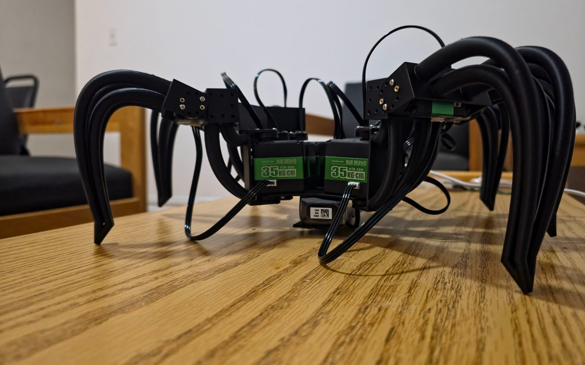
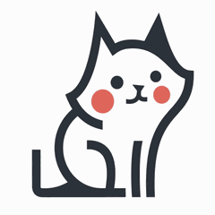

Columbia Business School
MBA, Columbia Fellow, Enterprises and Strategy
- Board Member, Peer Advisors Program
- Career Management Center Fellow
- Consultant, Small Business Consulting Program
Founding Engineer, AI/ML and enterprise platforms, Forward Deployed Engineer
I build multi-agent AI systems and deploy them into real companies. Now at Interplay, and studying for an MBA and MS at Columbia.
MBA, Columbia Fellow, Enterprises and Strategy
MS Engineering, Machine Learning, Artificial Intelligence, and Robotics
Bachelor of Technology, Computer Science and Engineering
Merit Scholar and VP of Photography Club. Digitized student affairs for 6k+ students.
New York, United States
Jun 2026 - Present
Led product and architecture for Ivy, a multi-agent AI platform (Temporal, OpenClaw, MCP, 100+ integrations) for family offices, scaling it from single-user to multi-tenant deployment with human-in-the-loop guardrails.
Built production RAG pipelines over structured and unstructured records (Slack, email, Drive) on Qdrant with hybrid vector/keyword search and incremental indexing. Enforced source-system ACLs at retrieval time.
Built LLM evaluation harnesses (Langfuse datasets, LLM-as-judge, hit@k/MRR) gating releases in a GitHub Actions CI/CD pipeline to AWS (Docker, ECR), and blocked regressions before deployment.
Instrumented LLM-native metrics (latency, token usage, cost-per-request) with granular Langfuse tracing. Built adaptive model routing (LiteLLM) and prompt caching, speeding responses 5.2x.
Bangalore, India
Oct 2024 - Jul 2025
Owned discovery, technical specs, build and productization of Agent Buddy, an award-winning, patent-pending multi-agent AI platform (Python, CrewAI, LangGraph) that cut enterprise AI use-case evaluation and implementation time.
Defined requirements and led delivery of LLM-powered developer tools (Flow Builder, Code Optimizer) using Java, Claude and agentic workflows, across 16K+ enterprise customers.
Built LLM evaluation and observability infrastructure (regression testing, performance monitoring, experimentation pipelines) for SAP's core AI API framework, and partnered with product managers to define its pricing, billing and usage metering.
May 2024 - Oct 2024
Shaped the SAP Joule (AI copilot) product roadmap by leading 10+ enterprise customer discovery interviews and presenting strategic recommendations to the SuccessFactors India C-suite.
Led cross-functional site initiatives including annual budget planning and a Microsoft Dev Box pilot. Defined success metrics, KPIs and a rollout plan projecting 90% faster developer-environment provisioning.
Jul 2021 - Oct 2024
Defined requirements, designed Figma mocks, prioritized features and maintained a living PRD with Product Managers, incorporating end-user feedback through the pilot launch of SuccessFactors Pay.
Analyzed historical support-ticket data to identify retroactive payroll as a top user pain point, then led requirements, business case, stakeholder alignment and rollout of the Payroll Results Viewer.
Chennai, India
Jan 2020 - Jul 2021
Led migration of distributed microservices to Kubernetes, with near-100% system reliability.
Built automated error-reporting pipelines using Python for 400+ enterprise APIs.
Designed and delivered cross-platform integration flows (SAP, Salesforce, ServiceNow, Jira), supporting core product workflow automations for sales and operations teams across Europe.

Robotics Studio, Columbia, Fall 2026
A six-legged robot I'm building from the servos up. Its 12 bus servos run on a driver I wrote for the Hiwonder protocol, and it now walks with a tripod gait, with software that stops a run if the battery sags or a servo overheats. The plan is to drive it with a spiking network built from a fruit fly's real connectome (Virtual Fly Brain), which waits on an archive branch while the hardware comes up.
Python, pyserial, Raspberry Pi 4 and 5, Hiwonder HTD-35H servos
View on GitHub (Project-NeuroHex, opens in a new tab)Pre-launch, V1 hardware in build
A desk companion that runs a local LLM (Qwen2.5 7B) on a Raspberry Pi 5 with a Hailo AI HAT, so nothing leaves the device by default. You talk to it, it talks back, a wave wakes it, and an animated face shows what it's doing. Cloud models are optional, per turn.
Python, FastAPI, Ollama, Whisper, Piper
View on GitHub (Lumi, opens in a new tab)
My personal multi-agent control center, run from Slack. A state graph routes each request to a specialist agent (research scout, coursework, career outreach, calendar), keeps memory in Qdrant, and pauses for my approval in Slack before anything irreversible, like sending an email.
Python, LangGraph-style state graph, Qdrant, Slack Bolt, Gemini, Docker
View on GitHub (Argus-AI, opens in a new tab)The fastest way to reach me is a message on LinkedIn.